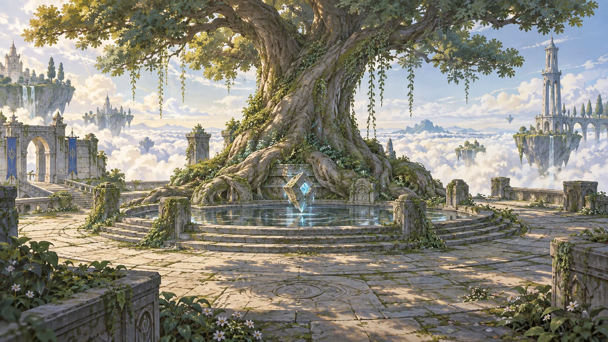

第二章 · 遗迹之门点击画面中的路标，走进下一处风景

07 / 16SKY CITY
遗迹之门
巨树庭院
一座城的心脏，在树根与水纹之间安静呼吸。
画面暂时无法读取。请保持
assets 文件夹与此页面放在一起。一座浮岛，十六段停留。使用 ← → 翻景，或打开目录自由漫游。

遗迹之门
一座城的心脏，在树根与水纹之间安静呼吸。
assets 文件夹与此页面放在一起。一座浮岛，十六段停留。使用 ← → 翻景，或打开目录自由漫游。
THE ATLAS OF LAPUTA